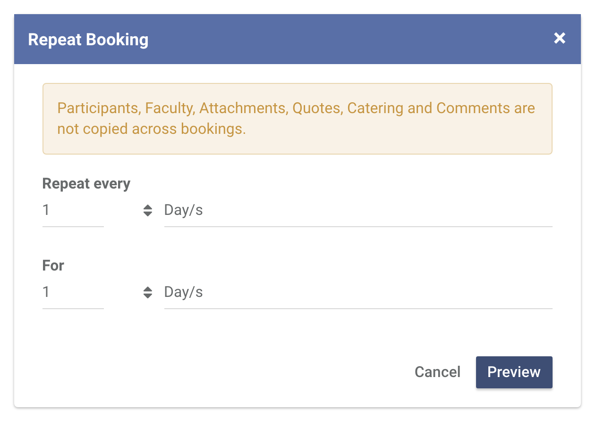
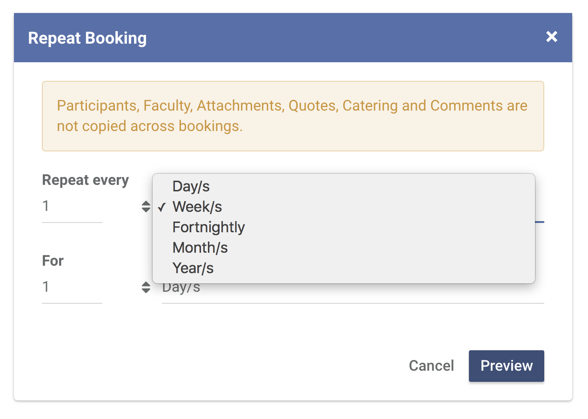
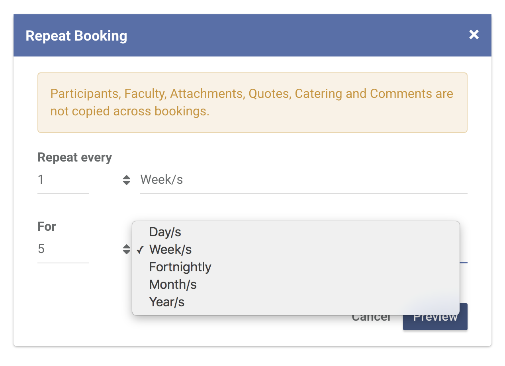
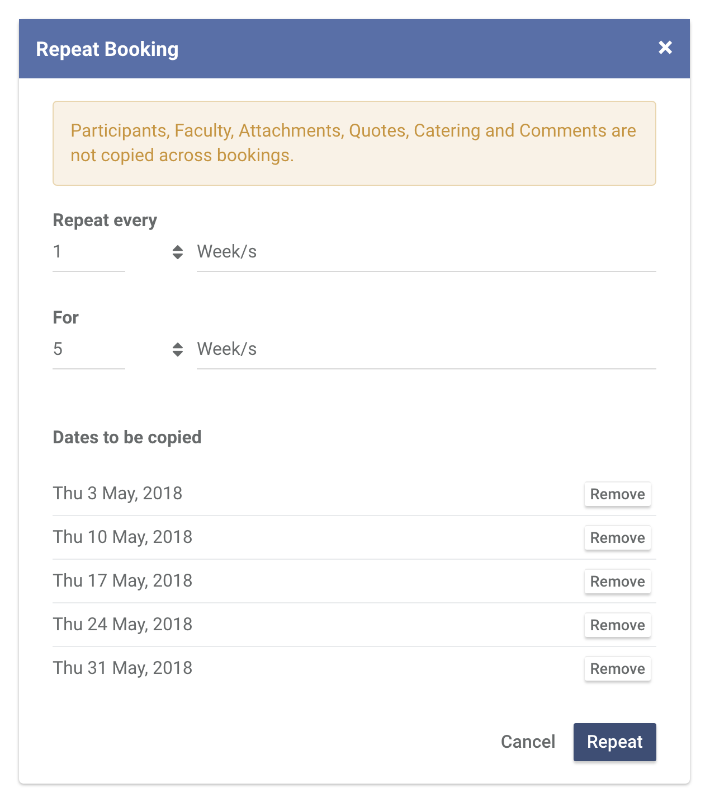

Repeating a booking
The repeat function is a quick way of making copies of a booking based on a frequency and occurence pattern that you specify.
-
To repeat a booking
Head over to the booking that you want to repeat. Click Actions and then click Repeat

-
In this modal, you will have to specify the frequency and the number of occurences. Be reminded that, the dates will be relative to the date of the booking you are repeating.
For example, if you have a booking every week for the next 5 weeks. Specify the frequency first. In this case, the booking repeats every 1 week...
...for the next 5 weeks.
Click Preview to see the dates for the new bookings. If you're happy with the dates, click Repeat and those bookings with those dates will be created in the background for you.
Take note that this function creates copies of the booking you are currently in. That means if you make a change on this booking, it won't apply automatically to the rest of the booking that you have repeated.